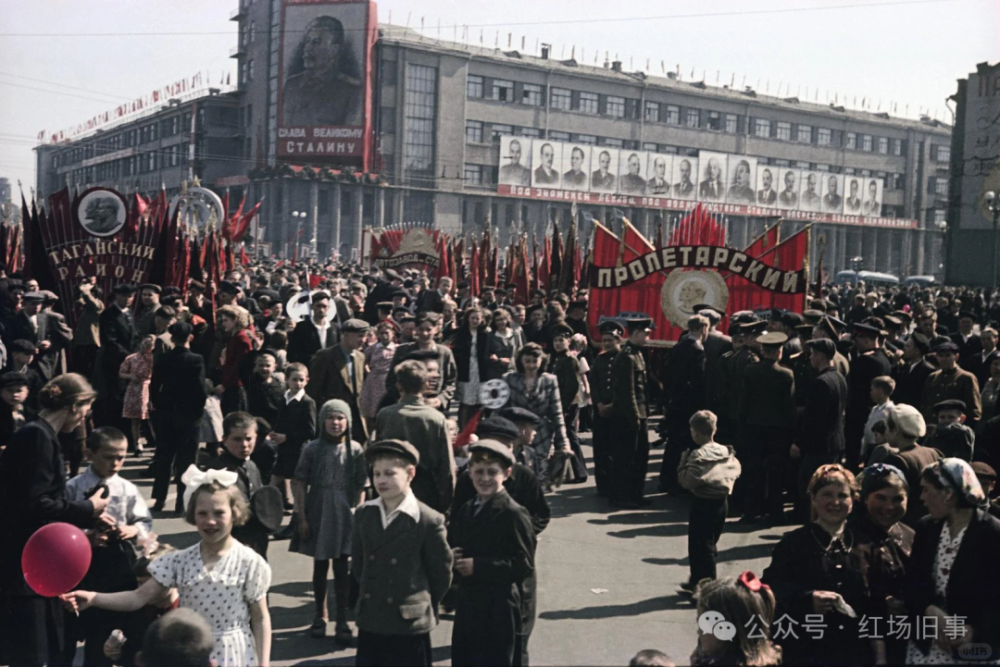
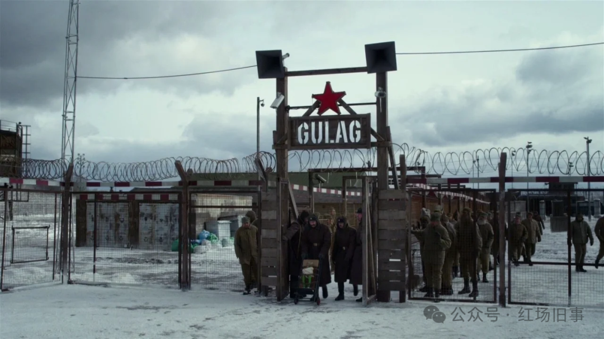
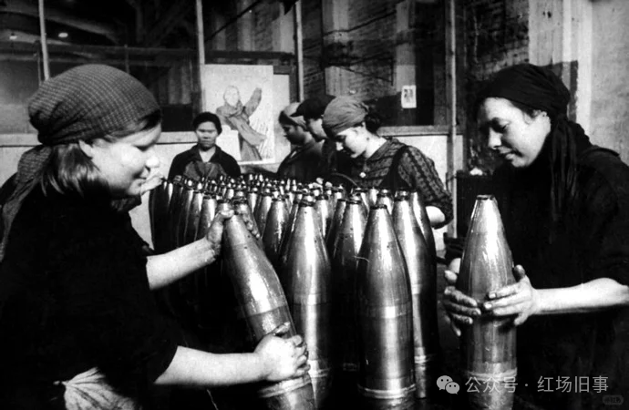
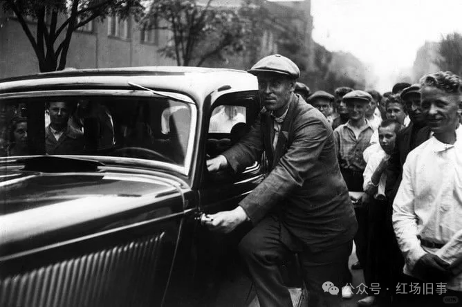
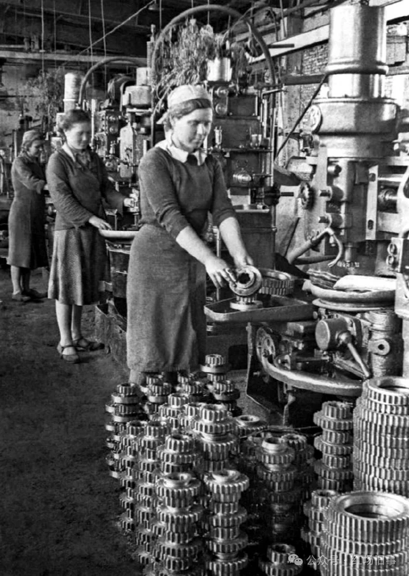

狂飙十年：苏联凭什么用两个五年计划，从农业国逆袭成工业巨头？
文字与图片版权归各自权利人所有。 查看公众号原文 ↗
1937年莫斯科红场游行中，巨大的钢铁工人雕像下走过一群面色苍白的少年工。1928年，一幅高达15米的巨幅宣传画悬挂在莫斯科街头：“五年计划，四年完成！”画面上钢铁洪流奔涌，机械臂膀伸向天空。而此时，苏联仍有80%的人口生活在农村，工业产值仅为美国的十分之一。

就在这一年，苏联拉开了人类历史上最激进工业化运动的序幕。接下来的十二年里，三个五年计划将彻底重塑这个国家，创造出足以抵抗纳粹德国的工业怪兽，也将数百万人抛入工业革命的残酷熔炉。
01 钢铁雄心1928年秋，全苏上下收到了一份长达1700页的文件——《苏联第一个五年计划》。这份计划详细规定了从1928年10月到1933年10月的发展目标：工业总产值增长180%，生产资料生产增长230%，煤炭产量从3550万吨增至7500万吨，生铁从330万吨增至1000万吨。“我们落后先进国家50到100年，”斯大林宣称，“要么在十年内追上这个距离，要么被他们碾碎。”计划启动时，苏联工业基础薄弱。全国仅有少量老旧工厂，大部分设备依赖进口，技术人员严重不足。但到了1932年底——原计划截止日期前一年——苏联宣布第一个五年计划已经完成。煤炭产量达到6400万吨，生铁620万吨，拖拉机产量从几乎为零增加到5万台。第聂伯河水电站——当时欧洲最大的水电站——建成发电，马格尼托哥尔斯克钢铁联合企业投产运营，成为世界上最大的钢铁厂之一。这些成就背后，是惊人的资源集中与动员能力。苏联将近四分之一的国民收入投入工业，这一比例是当时任何资本主义国家的两倍以上。
02 数字背后的工业化1933年，第二个五年计划开始实施，重点从数量扩张转向技术进步和产业多样化。斯大林提出了著名口号：“干部决定一切”，强调技术人才的重要性。这一时期苏联建立了完整的工业体系：钢铁产业：生铁产量从1932年的620万吨增长到1940年的1500万吨能源产业：煤炭从6400万吨增至1.66亿吨，石油从2100万吨增至3100万吨电力产业：发电量从135亿度增长到486亿度，增长3.6倍机械制造：拖拉机年产量达3.1万台，汽车产量从2.4万辆增至14.5万辆最引人注目的是军事工业的扩张。苏联坦克产量从1930年的740辆增至1938年的2271辆；飞机产量从1930年的860架增至1938年的7500架。到1937年，苏联工业产值已跃居欧洲第一，世界第二，仅次于美国。工业化在地理上也改变了苏联。乌拉尔山脉以东地区工业产值占比从1928年的21.3%上升到1940年的38.2%，为战争时期的工业转移奠定了基础。
03 古拉格：工业化的黑暗引擎在官方统计数据的光鲜背后，隐藏着一个平行经济体系——古拉格（劳动改造营管理总局）。到1930年代中期，古拉格已成为苏联经济的重要组成部分，承担了许多最艰苦、最危险的建设项目。

古拉格囚犯数量在1930年代急剧增长：1931年：约20万人1934年：约50万人1938年：超过150万人1941年：约190万人这些囚犯修建了白海-波罗的海运河、莫斯科-伏尔加河运河、多条铁路和公路，以及西伯利亚和远东地区的众多工业设施。他们也在极寒地区开采金矿、木材和其他资源。囚犯的劳动条件极其恶劣。在白海-波罗的海运河建设中，约2.5万名囚犯死亡，死亡率高达8.7%。他们得到的食物配给与完成的工作量直接挂钩，未完成定额者将面临减食惩罚，形成恶性循环。古拉格不仅提供廉价劳动力，还成为恐吓和控制社会的手段。1930-1940年间，约有1400万苏联公民被送入劳动营，其中至少160万人死于劳役、疾病或营养不良。
04 女工与少年工：被动员的“后备军”苏联工业化不仅改变了经济结构，也重塑了社会结构。随着男性劳动力大量投入重工业和军队，妇女和青少年成为劳动力的重要补充。

1928年至1940年间，苏联女工人数从近300万增至约1200万，占工人总数的比例从28%上升到41%。她们不仅进入纺织、食品等传统“女性行业”，还大量涌入冶金、机械制造、建筑等重工业部门。1931年，苏联政府颁布法令，规定妇女必须参加生产建设，托儿所和幼儿园网络迅速扩张，以“解放妇女投入劳动”。到1939年，苏联有近500万儿童入托，占适龄儿童的约30%。少年劳动力也被大规模动员。1930年代初，苏联面临技术工人严重短缺的问题，工厂学校(FZU)系统迅速扩张。14-17岁青少年在这些学校接受短期培训(通常6-9个月)后，直接进入工厂工作。到1935年，苏联有超过200万青少年在工厂学校学习或在企业工作。他们与成人同样承担生产定额，却往往得不到充分的安全保护和技术培训。
05 斯达汉诺夫运动：效率的狂热1935年8月31日，顿巴斯矿工阿列克谢·斯达汉诺夫在一班工作时间内开采了102吨煤，达到定额的14倍。这一事件被宣传为“社会主义劳动英雄主义”的典范，迅速演变为全国性的“斯达汉诺夫运动”。

1936.莫斯科.斯达汉诺夫与他的轿车一夜之间，斯达汉诺夫从普通矿工变为全国英雄。他登上报纸头条，获得列宁勋章、豪华公寓和汽车。效仿者如雨后春笋般涌现：纺织女工日产纱锭数量创新纪录，钢铁工人超额完成生产任务......这场运动的实质是通过少数先进工人的超常表现，不断提高所有工人的生产定额。1936年，工业部门的平均生产定额比1935年提高了20-25%。运动初期确实提高了生产效率，但也带来了严重问题：机器设备过度使用导致故障频发，工人因追求数量而忽视质量，普通工人因无法达到新定额而面临处罚。
06 二战：工业化成果的检验1941年6月22日，纳粹德国入侵苏联。战争初期，苏联损失惨重：西部工业区沦陷，丧失约40%的工业产能和大量熟练工人。但五年计划建立的工业体系最终证明了自己的价值。乌拉尔、西伯利亚和伏尔加河地区的“第二工业基地”迅速接替了生产任务。1941年下半年，超过1500家大型企业被紧急东迁，许多工厂在抵达新址几周后就开始恢复生产。

战争期间苏联的军工生产能力惊人：生产了10.2万辆坦克和自行火炮，是德国的1.5倍制造了15.7万架飞机，比德国多40%生产了83.4万门火炮，远超德国的任何盟友1944年，苏联每月生产2000多辆坦克，而德国同期仅为800辆。苏联T-34坦克以其简单、可靠和大规模生产能力成为二战中最有效的坦克之一。斯大林格勒拖拉机厂战前生产拖拉机，战争期间转为生产T-34坦克，每天最多能组装40辆坦克，工人们常常在德军轰炸后几分钟内就恢复生产。
07 被遗忘的代价五年计划的成就纪念碑上，刻满了无名者的牺牲。强制集体化导致约600-800万人死亡，主要为乌克兰、哈萨克等地的农民。工业化进程中的工业事故率比西方国家高出数倍，仅记录在案的重大矿难就导致数万人死亡。强迫劳动系统消耗了数百万人的生命。根据苏联解体后公开的档案，1930-1953年间，古拉格系统中共有约170万人死亡，实际数字可能更高。工业化还带来了严重的环境代价。马格尼托哥尔斯克钢铁厂周围数十平方公里土地被污染，附近河流鱼虾绝迹。苏联成为世界上单位GDP能耗最高的国家之一，这一模式影响了后续所有五年计划。普通工人的生活水平长期停滞。虽然工业化创造了大量就业，但实际工资直到1950年代才恢复到1928年的水平。消费品长期短缺，住房拥挤，大多数城市家庭居住在共用厨房和卫生设施的公共住宅(一种独特且普遍的住房形式，指由多个无亲属关系的家庭被迫合住、共用厨房和卫生间等设施的一套公寓)中。1945年5月，当苏联红军将红旗插上柏林国会大厦时，五年计划的工业化成果达到了历史性的证明时刻。二战胜利确实建立在苏联工业基础之上，这是五年计划无可争议的成就。但站在历史的长河中审视，这种“国家超级工业化，人民长期贫困化”的模式，最终被证明是不可持续的。当1991年苏联解体时，它留下了一个工业结构失衡、技术落后于时代、人民生活水平远低于同等工业化国家的遗产。五年计划的真正悖论在于：它创造了一个能够击败纳粹德国的工业巨人，却未能建立一个能让普通人过上尊严生活的社会。钢铁产量可以计划，煤炭吨位可以规定，但人的尊严、创造力和幸福感，从来不是五年计划表格上能够填写的数字。